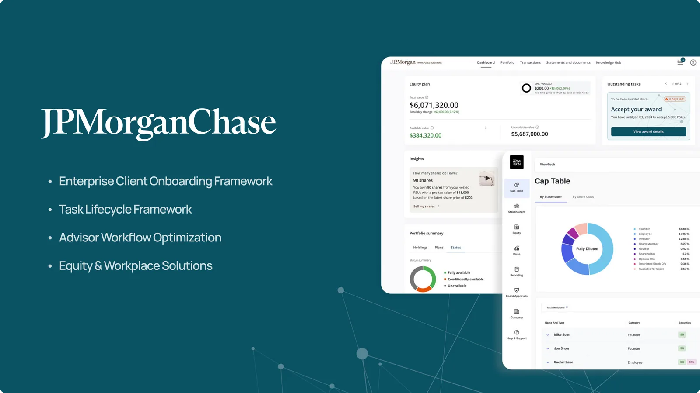
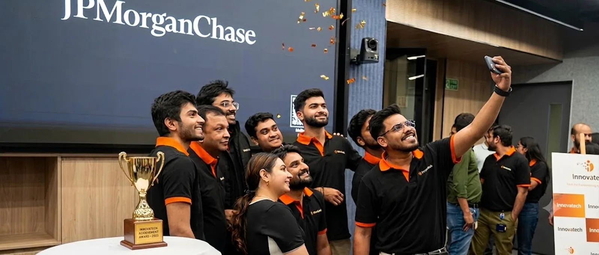
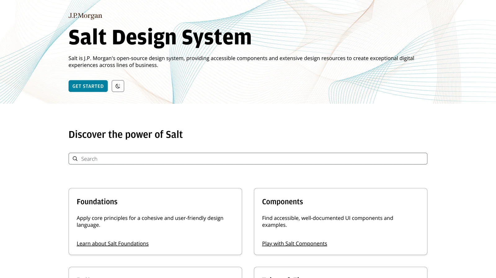
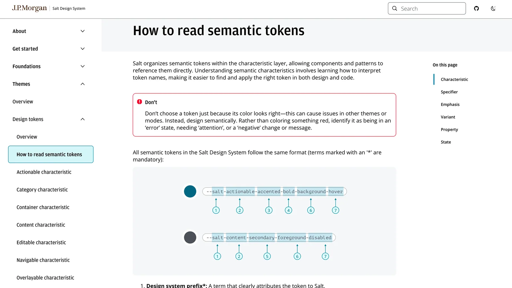
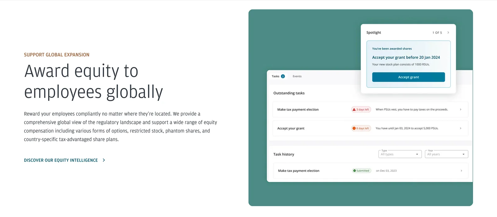
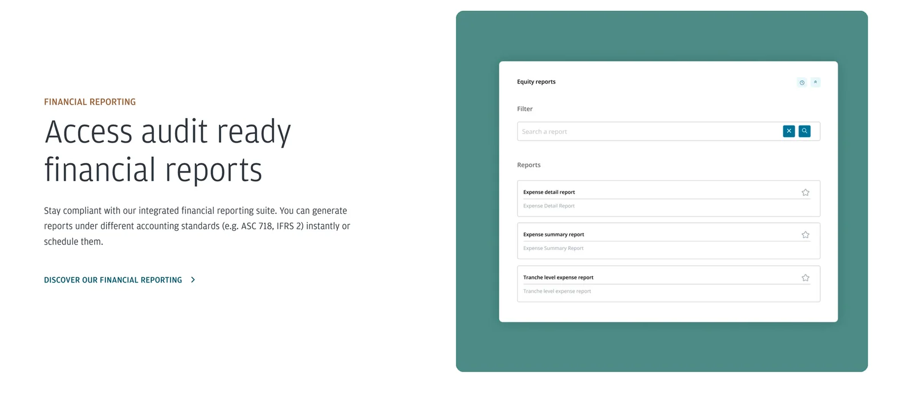
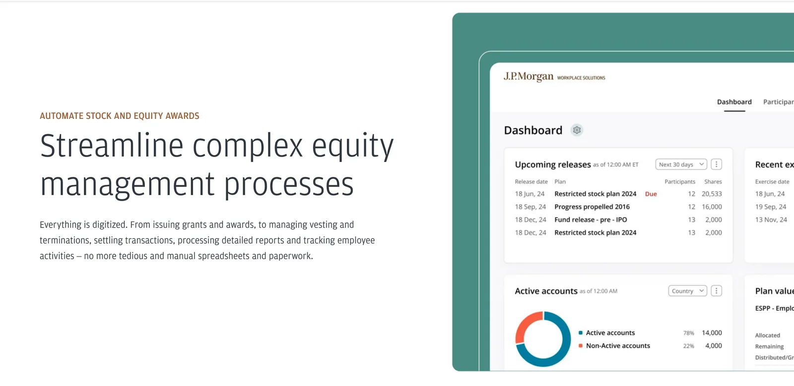
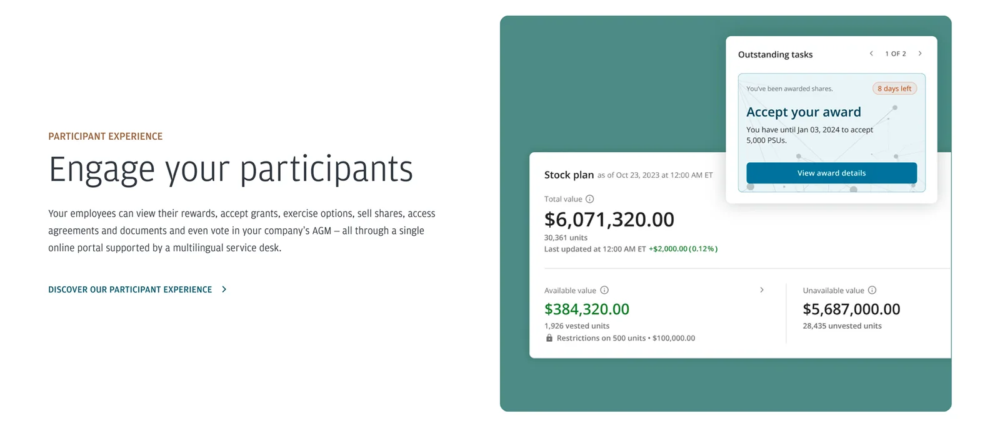

Assistant Vice President (AVP), Product Design
JPMorganChase
Building scalable financial systems, enterprise workflows, and AI-driven design processes in highly regulated environments.
Designing systems that hold up under real complexity.
At JPMorganChase, I worked across advisor experiences, enterprise onboarding systems, governance workflows, equity and workplace solutions, and internal design operations. My work focused on simplifying complex financial processes, creating scalable frameworks, and accelerating design-to-delivery cycles.
Every solution had to balance regulatory compliance, technical feasibility, cross-functional alignment, global scalability, and long-term maintainability. The work was rarely about a single screen. It was about creating rules and structures that many products, teams, and clients could rely on.

Advisor Intelligence Platform
Hackathon winner '25

Problem
Financial advisors manage large client portfolios with limited time and fragmented information. Identifying who needs attention and finding the right engagement opportunity was largely manual, making preparation slow and outreach inconsistent.
Objective
Increase advisor productivity by helping teams prioritize the right clients, discover timely engagement opportunities, improve conversion potential, and scale personalized communication.
Client prioritization
Surfaced high-priority clients using relationship value, time-sensitive events, milestones, conversion potential, and engagement signals.
Opportunity discovery
Identified clients requiring attention, relevant banking prospects, high-value moments, and recommended outreach actions.
Advisor enablement
Made customer context faster to understand so advisors could prepare stronger conversations and increase outreach capacity.
A scalable system that helped advisors reach more clients in less time while making each interaction more relevant.
Reusable interaction standards for a regulated ecosystem.
Building a design system in banking is fundamentally different from building one for a standalone consumer product. Every component has to satisfy accessibility, design review, legal, compliance, security, technical feasibility, and cross-product compatibility.

Modal framework
Defined informational and action-oriented modal patterns, including rules for content hierarchy, severity, action priority, accessibility, and behavioral consistency.
Input architecture
Standardized input components, form patterns, validation states, error handling, field behaviors, and compatibility standards that could scale across products.

The core contribution was not a collection of components. It was a shared interaction language for a complex enterprise.
Flexible enough for each client. Repeatable enough for the enterprise.
Corporate clients brought different employee data needs, country regulations, documentation, business rules, branding, and communication requirements. The challenge was to absorb that variation without rebuilding the experience every time.

Discover
Worked with stakeholders to map client requirements, constraints, configurable elements, and the boundary between reusable and custom flows.
Structure
Separated broker-agnostic journeys and shared data patterns from company-specific, region-specific, and specialized documentation needs.
Operationalize
Created up-front configuration and asset processes that made onboarding repeatable despite the absence of a supporting CMS.
Making regulatory obligations understandable and actionable.

Onboarding did not end at enrollment. Employee changes could trigger recertification, employment verification, country declarations, documentation updates, and regulatory acknowledgments. I designed flows that supported W-8, W-9, country-specific requirements, and ongoing compliance while keeping the process legible for employees.
Complex equity operations, surfaced with clarity.

Equity programs generate dense operational work: awards, vesting events, transactions, plan activity, participant records, and reporting. The design goal was to give administrators a reliable operating surface while helping participants understand the actions that mattered to them.
One framework from intake to action, interruption, reminder, and history.

Inbox, categorization, and priority.
Deadlines, context, timeline, and decision support.
Leave safely and return without losing progress.
Recurring reminders that prevent missed actions.
History, past decisions, transparency, and auditability.
The framework supported governance voting, board modifications, compliance actions, employee approvals, and administrative workflows. Its central design problem was balancing ease of use with traceability, accountability, and long-term governance requirements.
Reducing operational friction across borders.
Cross-border documentation often became fragmented across clients, employers, employees, and administrative stakeholders. I mapped communication flows, identified digital opportunities, simplified document exchange, and helped reduce dependency on paper-based processes.
Shortening the path from idea to a decision.
Discover faster
Worked with Product Owners to structure ideas, improve requirement clarity, and create PRDs more quickly.
Prototype earlier
Built rapid prototype workflows that made concepts tangible and accelerated stakeholder feedback.
Deliver closer
Produced implementation-ready specifications and contributed smaller pull requests to reduce duplicate effort.
Idea → Prototype → Feedback → Decision
Systems over one-off screens.
Systems thinking
Frameworks that could support many teams, products, and future requirements.
Complexity simplification
Regulated workflows translated into understandable experiences.
Scalability
Patterns built to absorb new clients, countries, and operational needs.
Cross-functional leadership
Alignment across product, design, engineering, compliance, legal, and business.
Operational excellence
Stronger design-to-implementation workflows with less duplication.
Innovation
AI-led practices that improved visibility, speed, and decision quality.